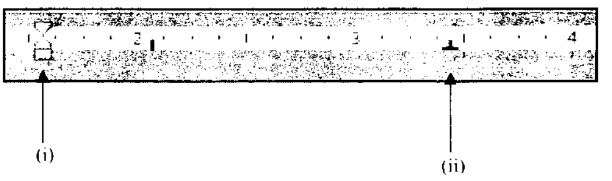

COMPUTER APPLICATIONS I (THEORY)
Exam Code: 2920/102A
Duration: 2 hours
Period: November 2014
Define the term record as used in database programs. In database programs, a record is a complete set of fields that contains all the data about one particular item in a database table. It represents a single row in a table and is composed of fields (columns), each holding a specific piece of information about that item. Define the term range as used in spreadsheet programs. In spreadsheet programs, a range is a rectangular block of cells specified by the cell addresses of the top-left and bottom-right corners. It can be a single cell, a row, a column, or a combination of rows and columns, used to perform operations on multiple cells simultaneously. (b) Figure 1 shows features of a spreadsheet program. Use it to answer the question that follows. Explain the function of each of the features labeled (i) and (ii). (i) AutoSum: This feature, often represented by the Greek letter Sigma (∑), automatically calculates the sum of a range of numbers. It typically sums the values in the cells directly above or to the left of the selected cell, providing a quick way to add columns or rows of numbers. (ii) Chart Wizard: The Chart Wizard is a step-by-step guide that assists users in creating various types of charts and graphs from spreadsheet data. It simplifies the process of visualizing data by leading users through the selection of chart type, data ranges, chart options, and formatting, making chart creation accessible to users with varying levels of expertise. (c) Distinguish between an attribute and an entity as used in database programs. Entity: An entity is a real-world object or concept about which data is stored in a database. It can be a person, place, thing, event, or concept that is distinguishable and needs to be represented in the database. For example, in a student database, 'Student' is an entity. Attribute: An attribute is a characteristic or property of an entity. It describes a piece of information about the entity. Attributes are the columns in a database table. For example, for the 'Student' entity, attributes could be 'StudentID', 'Name', 'Course', and 'DateOfBirth'. Key Differences: An entity is the subject of the data (the table itself), while an attribute is a specific detail or piece of information about that subject (a column in the table). Entities are the primary objects, and attributes define them. (d) Assuming a windows-based environment, outline the procedure that could be used to create an email account. Open a Web Browser: Launch a web browser such as Google Chrome, Mozilla Firefox, or Microsoft Edge on your Windows computer. Navigate to an Email Provider's Website: Go to the website of an email service provider like Gmail (www.gmail.com), Outlook (www.outlook.com), or Yahoo Mail (mail.yahoo.com) in the browser's address bar. Find the "Sign Up" or "Create Account" Option: Look for a button or link that says "Sign up," "Create account," or similar, usually located on the homepage of the email provider's website. Fill in the Registration Form: Complete the registration form by providing the required personal information. This typically includes your first name, last name, desired email address (username), password, date of birth, gender, and phone number for recovery purposes. Agree to Terms and Conditions and Verify Account: Read the terms of service and privacy policy, and if you agree, check the box to accept. Then, follow any verification steps, which might involve verifying your phone number or email address through a code sent to you. Once verified, your email account is created and ready to use. 2. (a) (i) Outline two modules that could be included in a reservation system. Booking Module: This module allows users to make new reservations. It handles inputting customer details, selecting services or resources to be reserved, specifying dates and times, and confirming the booking. It also often includes features for checking availability and displaying pricing. Customer Management Module: This module manages customer information, including contact details, booking history, preferences, and loyalty status. It enables staff to access and update customer records, personalize services, and track customer interactions, enhancing customer relationship management. (ii) A student in an ICT class wrote the formula = B4 + $C8 in cell D5. If the formula was copied to cell F7, write the resultant formula. If the formula Explanation: When copying from D5 to F7, the cell reference moves 2 columns to the right (from D to F) and 2 rows down (from 5 to 7). - The relative cell reference - The absolute column and absolute row reference (b) Explain the function of each of the following utility programs: (i) linker; A linker is a utility program that combines object code files generated by a compiler or assembler into a single executable program. It resolves external references between different object files, such as function calls and variable references, and combines them with necessary libraries to create a final, runnable program. (ii) loader. A loader is a utility program that is responsible for loading an executable program into main memory (RAM) and preparing it for execution. It performs tasks such as reading the executable file from storage, allocating memory space, resolving symbolic addresses, and initializing registers before transferring control to the program's starting point for execution. (c) (i) Table 1 shows a list of DOS commands applied during a computer session. Classify the commands as either internal or external. Table I Copy: External Assign: External Type: Internal Attrib: External (ii) Explain one circumstance under which video communication programs could be applied in organizations. Video communication programs are applied in organizations for conducting virtual meetings and conferences, especially when participants are geographically dispersed. This allows for face-to-face interaction, screen sharing, and real-time collaboration, reducing travel costs and time while enhancing communication effectiveness for remote teams or multi-location projects. (d) With the aid of a sketch in each case, explain the following features as used in word processing program: (i) right align; Right Align: Right alignment positions text flush with the right margin, creating a ragged left edge. It is often used for dates, addresses, or aligning numerical data to the right in columns. Sketch: (ii) right column presets. Right Column Presets: Right column presets, often referring to right tab stops, are predefined positions within a line where text will align to the right when the tab key is pressed. This is useful for creating columns of text where each item in the column is right-aligned, such as in tables of contents or financial reports. Sketch: 3. (a) (i) Define the term clipboard as used in word processing programs. In word processing programs, the clipboard is a temporary storage area in computer memory that holds data that has been copied or cut. It allows users to transfer text, images, or other data within a document, between documents, or even between different applications. The content in the clipboard can be pasted one or more times into a new location. (ii) Explain the function of each of the following features as used in database programs: I. report; In database programs, a report is a formatted and organized presentation of data extracted from one or more tables or queries. Reports are designed to summarize, analyze, and present data in a readable and visually appealing format for decision-making, analysis, or distribution. They often include features like grouping, sorting, calculations, and formatting to highlight key information. II. form. In database programs, a form is a user interface object designed to simplify data entry, display, and editing in a database table or query. Forms provide a structured and user-friendly way to interact with data, often presenting one record at a time with labeled fields, dropdown lists, and other controls to enhance usability and data accuracy. (b) With the aid of a sketch, describe a stacked column chart as used in spreadsheets. A stacked column chart is a type of bar chart that is used to compare the parts to the whole. In a stacked column chart, each column represents a total, and it is divided into segments representing different categories or parts of that total. The segments are stacked on top of each other within the column, and each segment's height corresponds to its value. Sketch: In this sketch, each column (Column 1, Column 2, Column 3) is segmented into categories (Category 1, Category 2, Category 3). The total height of each column represents the aggregate value, while the height of each segment shows the contribution of each category to that total. (c) Figure 2 shows worksheets created using a spreadsheet program. Use it to answer the question that follows. Using cell reference and an appropriate function, write a consolidated formula that would be used to calculate the mean mark for the data in the two worksheets. To calculate the mean mark for the data in both worksheets, assuming the first worksheet is Sheet1 and the second is Sheet2, and the marks are in column C of Sheet1 (C2:C5) and column H of Sheet2 (H2:H5), the consolidated formula using the AVERAGE function would be: This formula calculates the average of all the marks listed in the specified ranges from both worksheets, providing a single mean mark value. (d) Table 2 shows students' information in a certain Institution prepared using a database program. Use it to answer the questions that follow. Write a query statement that could be used to extract records of students who registered for the ICT course. Assuming the table is named "Students" and the course name is in the "CourseName" field, a SQL query statement to extract records of students registered for the ICT course would be: This query selects all columns (*) from the 'Students' table where the 'CourseName' field is equal to 'ICT'. 4. (a) (i) Outline two disadvantages of a file based system. Data Redundancy and Inconsistency: File-based systems often lead to data redundancy because data may be duplicated across multiple files. This redundancy can cause data inconsistency, where the same piece of information has different values in different files, making it difficult to maintain data integrity. Data Isolation: In a file-based system, data is often scattered across different files, making it difficult to access and integrate data from various files. This isolation hinders efficient data sharing and can complicate tasks that require combining data from multiple sources, limiting the system's ability to provide a unified view of information. (ii) Outline the procedure that could be used to print a selected section in a word document. Select the Text: In the word document, use your mouse to click and drag to highlight the specific section of text you want to print. Open Print Dialog: Press Choose "Selection" in Print Settings: In the Print dialog box, under the "Settings" section, look for a dropdown menu usually labeled "Print all pages" (or similar). Click on this dropdown and choose the option "Print Selection" or simply "Selection." Print: Click the "Print" button to print only the selected section of the document. (b) Distinguish between caption and bookmark as used in word processing programs. Caption: A caption is a numbered label that you can add to figures, tables, equations, or other objects in a document. Captions typically appear below figures and above tables, providing a brief description or title for the object. They are automatically numbered and can be easily updated if objects are added or removed, helping to maintain consistent referencing throughout the document. Bookmark: A bookmark is a named location in a document that you can assign to a specific text passage, image, or place. Bookmarks act as targets for hyperlinks and cross-references within the document or from external sources. They allow users to quickly navigate to specific parts of a document, and are primarily used for document navigation and linking rather than labeling objects. Key Differences: Captions are for labeling and numbering figures and tables, primarily for referencing objects. Bookmarks are for naming locations in a document, mainly for navigation and linking to specific parts of the document. (c) Figure 3 shows typical features of a word processing program. Explain the function of the features labeled (i) and (ii).  (i) Tab Stop: This feature, indicated by the icon at position (i) in Figure 3, is used to set tab stops in a word processing document. Tab stops define specific horizontal positions within a line of text where the cursor will jump to when the Tab key is pressed. This is essential for aligning text in columns, creating indents, or positioning elements at precise locations on a line. (ii) Margin Control: Feature (ii) in Figure 3 represents margin control, likely indicating the ability to adjust document margins. Margin controls allow users to set the amount of white space around the text on all sides of the page. Adjusting margins is crucial for controlling text layout, fitting content on a page, and adhering to formatting requirements for different types of documents. (d) Marion intends to create three objects on top of each other using a presentation program. Outline three ordering options she could use to achieve her goal. Bring to Front: This ordering option moves a selected object to the very top of the stacking order, ensuring it is displayed in front of all other overlapping objects. This is used when you want a particular object to be completely visible and not obscured by any other object. Send to Back: This option moves a selected object to the very bottom of the stacking order, placing it behind all other overlapping objects. It is useful when you want an object to serve as a background element or to be positioned behind other objects. Bring Forward/Send Backward: These options allow for incremental ordering adjustments. "Bring Forward" moves an object one step up in the stacking order, bringing it in front of the object immediately in front of it. "Send Backward" moves an object one step down, placing it behind the object immediately behind it. These are useful for fine-tuning the layering of objects in a presentation. 5. (a) (i) Define the term hyphenation as used in DTP programs. In DTP programs, hyphenation is the process of breaking words at the end of lines using hyphens to create a more uniform right margin in justified text or to improve line breaks in narrower columns, enhancing readability and visual appeal. (ii) Explain the term defragmentation as used in computer systems. Defragmentation is the process of reorganizing data on a hard disk drive (HDD) to store file pieces contiguously. Over time, files can become fragmented, meaning parts of files are scattered across the disk, which slows down read/write times. Defragmentation consolidates these file fragments, placing them closer together to improve disk access speed and overall system performance. (b) Distinguish between object linking and object embedding as used in DTP programs. Object Linking: Object linking in DTP programs establishes a dynamic connection between a document and an external source file (like an image or spreadsheet). When an object is linked, the document displays a representation of the object, but the actual data remains in the external file. Any changes made to the source file are automatically reflected in the document when it is opened or updated. This is useful for keeping documents updated with the latest version of external content and for reducing document file size. Object Embedding: Object embedding inserts a copy of an object from another file directly into the document. Once embedded, the object becomes part of the document file and is no longer linked to the external source. Changes made to the original source file will not affect the embedded object in the document. Embedding is suitable when you need to include content as a static part of the document and want to ensure it remains consistent regardless of changes to the source file. Key Differences: Linking creates a dynamic reference to an external file for live updates and smaller document size, while embedding inserts a static copy of the object into the document, making it independent of the source file but increasing document size. (c) (i) Describe the output produced when the following command is executed. C:\> DIR D:*.ser The command Output Description: - It will display the directory listing for drive D:. - It will filter and show only files that match the wildcard pattern - For each ".ser" file found, it will typically display information such as the file name, file size, date and time of last modification. - If no ".ser" files are found in the root directory of drive D:, it will indicate "File not found" or a similar message. (ii) Write a DOS command that would duplicate information stored in a folder named KNEC in drive C to a folder named EXAMS in drive E. The DOS command to duplicate the folder named "KNEC" from drive C to a folder named "EXAMS" in drive E is: Explanation of command parameters: - - - - - (d) Margie intends to print a 12-page document prepared in a presentation program. Outline the procedure she could use to print the notes in the presentation. Open Print Dialog: In the presentation program, go to the "File" menu and select "Print" (or press Select Print What Option: In the Print dialog box, find the "Print What" or similar setting. This is usually a dropdown menu that specifies what elements of the presentation to print. Choose "Notes Pages": From the "Print What" dropdown menu, select "Notes Pages". This option tells the program to print the notes pages view, which includes each slide with its associated speaker notes below it. Adjust Other Print Settings (Optional): Configure other print settings as needed, such as printer selection, print range (e.g., all slides or a specific range), number of copies, and paper size or orientation if necessary. Print: Click the "Print" button to start printing the presentation notes pages. Each printed page will contain a slide thumbnail at the top and the corresponding notes below. 6. (a) (i) State four search engines used in Internet. Google Bing DuckDuckGo Yahoo! Search (ii) Explain the function column guide feature as used in DTP programs. In DTP programs, column guides are non-printing vertical lines that divide a page into columns. Their function is to aid in creating multi-column layouts, such as in newsletters, magazines, or brochures. Column guides help designers to consistently align text and graphics within defined columns, ensuring a structured and organized page layout with balanced visual elements. (b) Employees of PGD Company Ltd. complained to the management about the usage of using email programs. Explain two limitations of the programs that they could have mentioned. Security Risks (Phishing and Malware): Email programs are vulnerable to security threats such as phishing attacks and malware distribution. Employees might complain about the risk of receiving phishing emails that attempt to steal sensitive information or emails containing malicious attachments that can infect their computers with viruses or other malware, leading to data breaches or system compromises. Information Overload and Time Management Issues: The constant influx of emails can lead to information overload, making it challenging for employees to manage their inbox effectively and prioritize important messages. Employees may complain about spending too much time sorting, reading, and responding to emails, which can decrease productivity, increase stress, and make it difficult to focus on core tasks due to constant email notifications and demands. (c) During a DTP practical lesson a teacher advised the students to use the following features: (i) sidebars; (ii) pull quotes. (i) Sidebars: Sidebars are secondary blocks of text or graphics placed alongside the main body of content in a DTP layout. Their function is to present supplementary information that is related to the main content but not essential for its primary flow. Sidebars are used to add context, provide examples, offer definitions, or include brief, related stories or facts without interrupting the main reading path. They enhance readability and organization by separating different types of information. (ii) Pull Quotes: Pull quotes are short, eye-catching excerpts taken directly from the main text and displayed in a larger or visually distinct font, often set off graphically within the layout. The function of pull quotes is to draw attention to key points or interesting statements within the text, breaking up large blocks of text, and enticing readers to engage with the content. They improve visual appeal and highlight important or impactful sentences to increase reader interest and comprehension. (d) Outline the circumstances under which each of the following features could be used in a presentation program: (i) timing; Timing: Timing in a presentation program is used when creating self-running slideshows, such as for displays at trade shows, kiosks, or for sending presentations to be viewed without a live presenter. It allows slides to advance automatically after a set duration, ensuring a consistent and paced viewing experience without manual intervention. (ii) cropping. Cropping: Cropping in a presentation program is used when you need to remove unwanted parts of an image to focus attention on the most important area, or to adjust the image's dimensions to better fit within a slide layout or placeholder. It helps in visually streamlining images and ensuring they complement the slide's content without unnecessary distractions.1. (a) (i) (1 mark)
Answer
1. (a) (ii) (1 mark)
Answer
1. (b) (4 marks)
Answer
1. (c) (4 marks)
Answer
1. (d) (5 marks)
Answer
2. (a) (i) (2 marks)
Answer
2. (a) (ii) (2 marks)
Answer
=B4 + $C8 in cell D5 is copied to cell F7, the resultant formula will be =D6 + $C8.B4 will adjust by the same amount, moving 2 columns right (B to D) and 2 rows down (4 to 6), becoming D6.$C$8 remains unchanged as $C$8 because the dollar signs ($) fix both the column and row, preventing adjustment during copying.2. (b) (i) (2 marks)
Answer
2. (b) (ii) (2 marks)
Answer
2. (c) (i) (2 marks)
Command
Type
Copy
Assign
Type
Attrib
Answer
2. (c) (ii) (2 marks)
Answer
2. (d) (i) (1 ½ marks)
Answer
This text is
right-aligned.
Each line ends at
the same right edge.
2. (d) (ii) (1 ½ marks)
Answer
Item 1 Value
Long Item Name 2 Price
Item Three Amount
3. (a) (i) (2 marks)
Answer
3. (a) (ii) I. (2 marks)
Answer
3. (a) (ii) II. (2 marks)
Answer
3. (b) (4 marks)
Answer
Category 3
_________
| | Category 2
|_________|
| | Category 1
|_________|
| |
|_________|
Column 1 Column 2 Column 3
3. (c) (3 marks)
Answer
=AVERAGE(Sheet1!C2:C5,Sheet2!H2:H5)4. (d) (2 marks)
Answer
SELECT * FROM Students WHERE CourseName = 'ICT'4. (a) (i) (2 marks)
Answer
4. (a) (ii) (2 marks)
Answer
Ctrl + P (or go to File > Print) to open the Print dialog box.4. (b) (4 marks)
Answer
4. (c) (4 marks)
Answer
4. (d) (3 marks)
Answer
5. (a) (i) (1 mark)
Answer
5. (a) (ii) (2 marks)
Answer
5. (b) (4 marks)
Answer
5. (c) (i) (2 marks)
Answer
C:\> DIR D:*.ser when executed in a DOS or Windows command prompt will list all files in the root directory of drive D: that have the file extension ".ser".*.ser, meaning files with any name but ending with the extension ".ser".5. (c) (ii) (2 marks)
Answer
C:\> XCOPY C:\KNEC E:\EXAMS /E /IXCOPY: is the DOS command for copying files and directories.C:\KNEC: is the source path, specifying the folder "KNEC" in drive C.E:\EXAMS: is the destination path, specifying the folder "EXAMS" in drive E./E: This switch is used to copy directories and subdirectories, including empty ones./I: If the destination "EXAMS" does not exist, this switch will create it as a directory. If it exists, it will copy into it.5. (d) (4 marks)
Answer
Ctrl + P) to open the Print dialog box.6. (a) (i) (2 marks)
Answer
6. (a) (ii) (2 marks)
Answer
6. (b) (4 marks)
Answer
6. (c) (4 marks)
Answer
6. (d) (i) (1 ½ marks)
Answer
6. (d) (ii) (1 ½ marks)
Answer